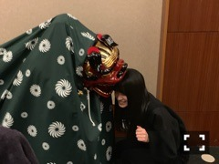
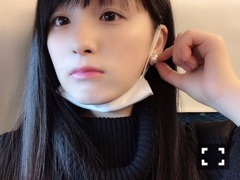
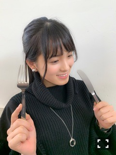

2019/0105Sat2019.いちごの日
あけましておめでとうございます。
大園桃子です。

獅子舞が噛んでくれたもん、2019年
いい年になることだろうと思うんだぁ、
2018年
あっという間に過ぎていきましたね。
シンクロニシティ
ジコチューで行こう
帰り道は遠回りしたくなる
シングルは選抜で活動させて頂き
とってもありがたく、でも気持ち的には
正直に言うと、喜びよりも不安のほうが
多かったです。不安が沢山の中、
楽しいと思えた瞬間はとっても嬉しく
幸せでした。
バラエティ番組に出させて頂くことも
多くある年でした。なかなかうまく
言葉が出てこないんです。
感情が抑えられないため、VTRを見ては
涙することが多く、なのにコメントを
求められると、言葉がまとまらなくて
なにも言えず...不安でいっぱいでしたが、
隣に先輩がいてくれて心強かったです。
面白いことをしてるわけでもないのですが
面白いと言われるようになりました。笑
12月30日は、シンクロニシティ
日本レコード大賞を頂きました。
乃木坂ってすごい...、、ですね。
みんなが本当に嬉しそうでそれを見てるのが
とっても嬉しく楽しかったです^ ^
そして2018年は、たくさんの先輩が卒業され
新しい道へ旅立って行きました。
明るい未来になることを願って影ながら
応援しています。
あ！クリスマス充実してました

あのですねー、
あまり目標を立てない桃子さん。
ですが2019年
泣くことよりも笑うことの方を多く
嫌と思うよりも好きと思うことの方を多く
小さなことに気づけたらいいな
いろんな事に心を動かしたいなぁと思うし
1番は沢山の思いをプラスに考えれるように
なりたいよー、2019年少しでも楽しく
ポジティブな人になりたいです。
メールとってくださってる方は
ももこの目標を聞くの2回目ですね、
ごめんなさい。
はいーーこんな感じの気持ちだぁ
桃子、今年は20歳になっちゃうね、
みんな驚いちゃう、桃子が20歳なんて
桃子が一番想像できないよ～～

ももこの事を好きでいてくれるみなさん
沢山ありがとうございます。
2019年もどうか宜しくお願いします。


読んでくれてありがとう
ばいばい、またね
2019/01/05 13:54
コメント(761)
桃子大好きじゃけー
桃ちゃん、こんばんは！
blt graph.買いましたよー
もうね、表紙から釘づけでした
どのページも綺麗だし可愛いしとても良かった！
写真を見てると声を聞きたくなるね
日曜日楽しみにしてます！よろしくね！
ではでは
今日もお疲れ様です！
おやすみなさいー(ᵔᴥᵔ)
blt graph.買いましたよー
もうね、表紙から釘づけでした
どのページも綺麗だし可愛いしとても良かった！
写真を見てると声を聞きたくなるね
日曜日楽しみにしてます！よろしくね！
ではでは
今日もお疲れ様です！
おやすみなさいー(ᵔᴥᵔ)
今日は、いい天気だよ。う～。
あけおめことよろ〜
レコード大賞二連覇おめでとうーー＼(^o^)／
やったぜ！
目標達成ガンバ〜(๑･̑◡･̑๑ )
レコード大賞二連覇おめでとうーー＼(^o^)／
やったぜ！
目標達成ガンバ〜(๑･̑◡･̑๑ )
大好き❤
大変遅くなりましたが今年も1年輝くももちゃんと共に頑張ります☀
ももこ！
好き！
好き！
大園桃子さんってかなり率直なかんじなのが良いですね。
心から感情なども豊かそうだけど、基本は穏やかな自然な姿勢みたいなのが、とても個性でチャーミングな点かと。
番組などでも感極まって涙しても、そのままを言葉で出していけたらいいですね。
どの部分で感動したとか、共感しちゃったなど、そのまま素直なかんじに。
泣くことは何もネガティブなことだけではなく、心を洗うような効果もあるんだと思うんですよ。
めっちゃ笑顔の大園さんもまじ楽しいとか嬉しさも出たりして、本物の笑顔っぽくって素敵ですからね。
最新のブログ写真でガルちゃんモノマネみたいにしてるのも楽しいわ、てかそういうのもお芝居や演技で活きてくると思うし、大園さんも実際才能も高そうので、これからもひとつひとつ楽しみながらとか頑張ってね。
心から感情なども豊かそうだけど、基本は穏やかな自然な姿勢みたいなのが、とても個性でチャーミングな点かと。
番組などでも感極まって涙しても、そのままを言葉で出していけたらいいですね。
どの部分で感動したとか、共感しちゃったなど、そのまま素直なかんじに。
泣くことは何もネガティブなことだけではなく、心を洗うような効果もあるんだと思うんですよ。
めっちゃ笑顔の大園さんもまじ楽しいとか嬉しさも出たりして、本物の笑顔っぽくって素敵ですからね。
最新のブログ写真でガルちゃんモノマネみたいにしてるのも楽しいわ、てかそういうのもお芝居や演技で活きてくると思うし、大園さんも実際才能も高そうので、これからもひとつひとつ楽しみながらとか頑張ってね。
おはよう！
今日は4時に目が覚めちゃって起きちゃった
だから、朝風呂してリラックスして6時頃からランニング行ってきた！大体8kmぐらい走ってきたよ！毎日続けて今1ヶ月経過した！
帰ってくると、飲み物を冷蔵庫に取りに行くんだけど雑誌の表紙がももちゃんのを棚に飾っててそれを見ながら休憩してるといつもおつかれっ！っておかえりみたいに言ってる気がしていつも励まされてます！！
勝手な妄想すいません
毎日好きが増しています！！
今日も一日頑張りましょう！！
今日は4時に目が覚めちゃって起きちゃった
だから、朝風呂してリラックスして6時頃からランニング行ってきた！大体8kmぐらい走ってきたよ！毎日続けて今1ヶ月経過した！
帰ってくると、飲み物を冷蔵庫に取りに行くんだけど雑誌の表紙がももちゃんのを棚に飾っててそれを見ながら休憩してるといつもおつかれっ！っておかえりみたいに言ってる気がしていつも励まされてます！！
勝手な妄想すいません
毎日好きが増しています！！
今日も一日頑張りましょう！！
おはよう☀
今日はじめじめしてるよ〜
昨日の夜、寝れなくておかなも空いて唐揚げを作って食べちゃったの
だから、揚げ物食ったぶん運動しないとなんだ！
今日は晴れてないけど、ももちゃんにこうやってコメントして元気になれてるから今日も元気！！
ももちゃんは昨日何したの？
今日も元気に過ごそうね！
今日はじめじめしてるよ〜
昨日の夜、寝れなくておかなも空いて唐揚げを作って食べちゃったの
だから、揚げ物食ったぶん運動しないとなんだ！
今日は晴れてないけど、ももちゃんにこうやってコメントして元気になれてるから今日も元気！！
ももちゃんは昨日何したの？
今日も元気に過ごそうね！


パシフィコ横浜個握、ありがとう
約3か月ぶりに会ったMoMoKo姫は
美人になっていた
レディーになっていた
可愛い可愛いというイメージだったけど
すっかり都会人に変身
まい姉さんに一歩近づいたかな
そのまい姉さん、このあと『のぎおび』だね
MoMoKo姫、お正月は鹿児島に帰ったんだね
弟にお年玉あげたよーーって
ちょっぴりお姉さんぶって可笑しかった
大園家のお雑煮は丸餅なんだね
以前さゆりんごが出た番組で
「愛知県岐阜県あたりを境に
東は四角で西は丸い
でも、鹿児島だけは四角」ってやってたから
ちょっと聞いてみたかったんだ
MoMoKo姫、いくつ食べた？
そういえば顔がちょっぴり丸く…嘘、嘘
梅ちゃん誕生日の前の日が私の誕生日
ーーって言ったら「おめでとう！」うれしかったよ
その梅ちゃんたちの成人式の取材
飛鳥ちゃん、面白いこと言ってたね
MoMoKo姫が率先して呼んであげたら…
次の個握は来月行くからね
風邪ひくなよ